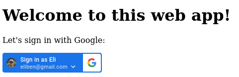
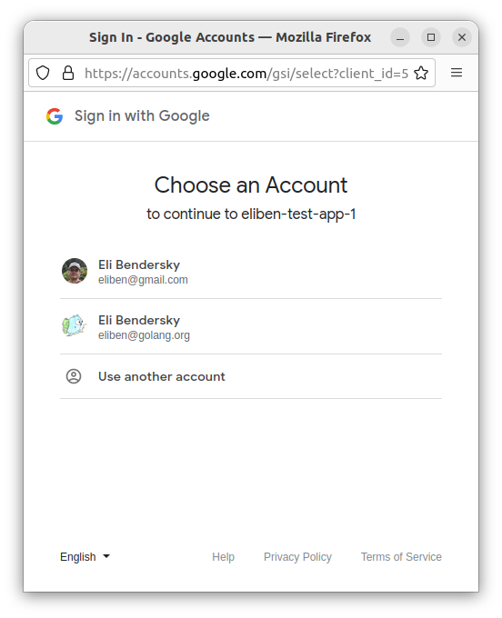

This post provides some code samples for implementing a "Sign-in with Google" flow for your web application in Go. For an overview of auth/authz and the OAuth protocol, please refer to my earlier post about Sign-in with GitHub.
Sign-in with Google has existed in one form or another for many years, and the technical approach to it evolved over time. I will start by presenting the currently recommended way - and the one that will feel most familiar to users - and will then mention a slightly more complicated and flexible alternative.
Using Google Identity Service (GIS)
The currently recommended way to implement sign-in with Google is using the Google Identity Service client library. There's a lot of documentation on that page, and it's worth reading through.
Using this approach, we'll get a standard looking button:
When clicked, a popup opens with a standard-looking Google account selection:
There's also an option for "one tap" which surfaces the currently logged in Google user in an in-page popup to click (this also works well on mobile!)
To get started, you'll need to register an application at https://console.cloud.google.com/apis/credentials and obtain a client ID and secret (the secret isn't used for this approach, but is needed for the next one).
We'll use a Google-provided JS client library called GSI which we include in our web page; it implements the actual button and all the client-side handling; here's a snippet from our Go server for this sample:
// This should be taken from https://console.cloud.google.com/apis/credentials
var GoogleClientID = os.Getenv("GOOGLE_CLIENT_ID")
const servingSchema = "http://"
const servingAddress = "localhost:8080"
const callbackPath = "/google/callback"
var rootHtmlTemplate = template.Must(template.New("root").Parse(`
<!DOCTYPE html>
<html>
<body>
<script src="https://accounts.google.com/gsi/client" async></script>
<h1>Welcome to this web app!</h1>
<p>Let's sign in with Google:</p>
<div
id="g_id_onload"
data-client_id="{{.ClientID}}"
data-login_uri="{{.CallbackUrl}}">
</div>
<div
class="g_id_signin"
data-type="standard"
data-theme="filled_blue"
data-text="sign_in_with"
data-shape="rectangular"
data-width="200"
data-logo_alignment="left">
</div>
</body>
</html>
`))
func main() {
if len(GoogleClientID) == 0 {
log.Fatal("Set GOOGLE_CLIENT_ID env var")
}
mux := http.NewServeMux()
mux.HandleFunc("/", rootHandler)
mux.HandleFunc(callbackPath, callbackHandler)
log.Printf("Listening on: %s%s\n", servingSchema, servingAddress)
log.Panic(http.ListenAndServe(servingAddress, mux))
}
func rootHandler(w http.ResponseWriter, req *http.Request) {
err := rootHtmlTemplate.Execute(w, map[string]string{
"CallbackUrl": servingSchema + servingAddress + callbackPath,
"ClientID": GoogleClientID,
})
if err != nil {
panic(err)
}
}
Note the configuration on the <div> element for the button; there's a ton of potential customization there - the docs explain these in detail.
We serve this page on the root ("/") handler of our local web server, and also register a callback URL which the Google auth server will redirect to once it confirms the user's identity [1]. When it does, it sends the logged-in user's information as a JSON Web Token (JWT); our server-side application should verify the validity of the token and then it's ready to accept the signed-in user.
We'll be using the google.golang.org/api/idtoken package for token verification (this comes from the official GCP client library for Go); here's our callback:
func callbackHandler(w http.ResponseWriter, req *http.Request) {
defer req.Body.Close()
if err := req.ParseForm(); err != nil {
http.Error(w, err.Error(), http.StatusBadRequest)
return
}
// The following steps follow
// https://developers.google.com/identity/gsi/web/guides/verify-google-id-token
//
// 1. Verify the CSRF token, which uses the double-submit-cookie pattern and
// is added both as a cookie value and post body.
token, err := req.Cookie("g_csrf_token")
if err != nil {
http.Error(w, "token not found", http.StatusBadRequest)
return
}
bodyToken := req.FormValue("g_csrf_token")
if token.Value != bodyToken {
http.Error(w, "token mismatch", http.StatusBadRequest)
}
// 2. Verify the ID token, which is returned in the `credential` field.
// We use the idtoken package for this. `audience` is our client ID.
ctx := context.Background()
validator, err := idtoken.NewValidator(ctx)
if err != nil {
panic(err)
}
credential := req.FormValue("credential")
payload, err := validator.Validate(ctx, credential, GoogleClientID)
if err != nil {
http.Error(w, err.Error(), http.StatusBadRequest)
}
// 3. Once the token's validity is confirmed, we can use the user identifying
// information in the Google ID token.
for k, v := range payload.Claims {
fmt.Printf("%v: %v\n", k, v)
}
}
The numbered comments follow the documentation step by step, so it should be easy to decipher. The end result is dumping some information about the user from the token; specifically, the Google email and registered name will be provided. Once you have that, you know who the user is and that they have an actual Google account.
This is it! I like how all the complicated front-end details are handled by Google's own JS library; there's a lot of potential nuance there with one-tap and automatic sign-in, different UI requirements for desktop browsers and mobile, etc. If you're developing a standard web-app, this definitely seems like the way to go.
Using OpenID Connect
OpenID Connect is an authentication protocol built on top of OAuth 2. The Google documentation for integrating it into your applications is here.
This is a more generic approach than using GIS - you're not beholden to use specific JS or HTML elements, but can integrate it into your flow in whatever way you wish - similarly to the GitHub approach outlined in my last post. I won't paste the code here - but it's well documented and follows the official docs. I have two separate samples:
- Using the go-oidc package: the full code is here.
- Using the gologin package: the full code is here. You may recognize the gologin package from my previous post on GitHub sign-in; indeed, the code delta between the two options is very small!
| [1] | Please refer to my description of OAuth to understand the redirection flow. This Google sign-in flow still relies on OAuth underneath. |